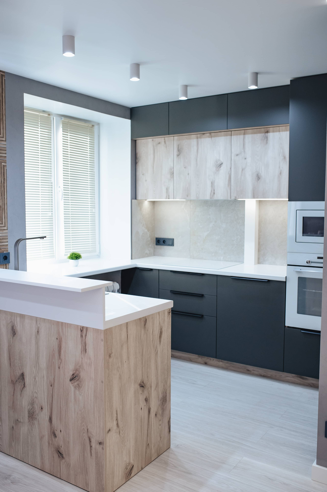

МЕБЕЛЬ НА ЗАКАЗ ОТ СВОЕГО ПРОИЗВОДСТВАКухня под вас.
Кухня под вас.
До последнего ящика.
Подберём планировку, материалы и наполнение. Приедем на замер с образцами и подготовим проект вашей мебели.
Рассчитать мою кухню
Кухня из каталога MalinaВНЕШНИЙ ВИД И ПОВСЕДНЕВНОЕ УДОБСТВОВаша кухня.
Ваша кухня.
Ваш порядок вещей.
Кофемашина, техника, посуда и место для готовки. Заранее продумаем, что где будет находиться, а цвет и материалы подберём под ваш интерьер.
Обсудить мою кухню